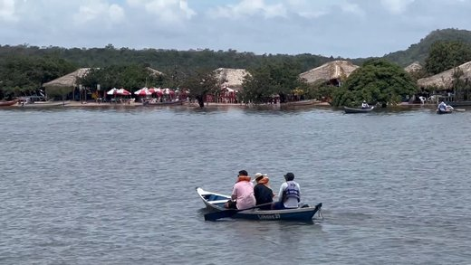

00:00:07.760
Uma catraia azul com três pessoas atravessa o rio diante de barracas de palha e vegetação ribeirinha.
Alter do Chão, Santarém (PA) · confirmado
A abertura mostra o cenário da travessia enquanto a narração situa a vila de Alter do Chão.
Transcrição · 00:00:11 | 00:00:19
Turismo Aqui — quadro de vídeo publicado no YouTube